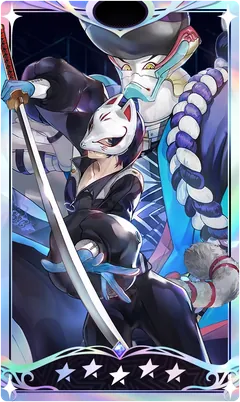

FOX Yusuke Kitagawa
Fonte: https://lufel.net/en/character/fox/ · letto il 2026-11-15 con il browser integrato (spoiler attivi) · Stato Global: rilasciato (set Failure marcato "#NOT RELEASED IN GLOBAL SERVER#"). Convenzione: nomi di skill, awareness, armi, Persona, set e stat lasciati in inglese come su lufel.net; condizioni ed effetti tradotti in italiano. Valori skill = LV10 / LV10+Minds 5 / LV13 / LV13+Minds 5. Valori armi = refinement R0/R1/R2/R3/R4/R5/R6.
Scheda#
| Campo | Valore |
|---|---|
| Nome | Yusuke Kitagawa |
| Codename | FOX |
| Persona | Goemon |
| Rarità / tipo | 5★ · Limited (lufel: nella versione Asia 5.0 è stato spostato nel pool standard) |
| Elemento | Ice |
| Posizione | Sweeper |
| Ruolo (lufel) | non indicato |
| Tag (lufel) | Counter · Resonance · Defense · Pierce Rate |
| Resistenza / Debolezza | Res: Ice · Wk: Fire |
| Mindscape Core | sì (KR V4.7) |
Character Review (lufel)#
- Progettato come DPS di tipo contrattacco basato sulla Defense, eccelle come DPS resistente o ottimizzato per l'auto-play.
- A causa del tasso di contrattacco instabile (65%), a meno che la Skill 3 non garantisca il 100% di contrattacco o non si usi l'Highlight, possono servire più tentativi per il punteggio massimo.
- Poiché la maggior parte dei personaggi scala con l'ATK e molti buffer aumentano l'ATK, le opzioni di buff disponibili sono limitate.
- Essendo un DPS da contrattacco, a differenza degli altri DPS che vanno messi per ultimi nell'ordine dei turni, è più efficace assegnarlo al primo slot per mantenere i buff.
- Sebbene ottenga Penetration (Pierce) tramite passive e Awareness 6, Surt e Jack-o-Lantern, pensati per FOX, hanno Defense base bassa, rendendo difficile vedere risultati eclatanti.
- Con l'espansione LV100, le nuove passive risolvono in gran parte il problema storico della dipendenza dal puro scaling di Defense: fino al 90% del suo Attack viene ora convertito in Defense, facendolo beneficiare anche dei buff ATK; l'aumento del danno base dei contrattacchi e i potenti buff per team Ice concessi tramite gli stack [Silver Frost] lo fanno sembrare quasi un altro personaggio.
- Poiché questa struttura passiva influisce su tutti gli alleati Ice, abbinarlo a Miyu·Summer, che prima competeva per uno slot simile, gli permette di accumulare [Silver Frost] molto rapidamente; è ora un'unità che giustifica il proprio slot anche da sola.
- Inoltre, nella versione Asia 5.0 è stato spostato dal pool limitato a quello standard.
Pro - Offre un gioco stabile grazie all'alta Defense.
Contro - Opera con la Defense come stat principale. - Ha accesso limitato a buffer che aumentano la Defense. - Dipende da effetti probabilistici. - Gli svantaggi legati alla Defense si risolvono una volta attivato il Mindscape Core.
Recommended Setup (lufel)#
Nota lufel: le impostazioni consigliate sono basate su contenuti futuri; alcune funzioni potrebbero non essere ancora disponibili (Revelation, Mindscape, ecc.).
- Revelation — Space: Meditation (tooltip "Meditation - Opulence": Follow Up CRIT DMG +50%) · oppure Ego (tooltip "Ego - Failure": Follow Up DMG Amplification +16%) · Sun/Moon/Star/Sky: Opulence (2-Set: Ice DMG +10% · 4-Set: danno degli attacchi Resonance +40%) · oppure Failure (2-Set: Wind DMG +10% · 4-Set: ogni colpo aumenta il proprio Follow Up DMG del 15% per 2 turni, fino a 3 stack) — set Failure marcato "#NOT RELEASED IN GLOBAL SERVER#"
- Main Options — Sun: HP · Moon: Defense / Damage Mult · Star: Crit Mult / Crit Rate · Sky: Defense
- Sub Options — 1ª priorità: Crit Rate / Crit Mult · 2ª: Defense / Damage Mult · 3ª: "-"
- Recommended Stats — LV10: "-" · LV10+Minds 5: "-" · LV13: "-" · LV13+Minds 5: "-"; Battle Entry +: "-"
- Priorità skill — 1º Skill 3 (MAX) · 2º Skill 2 (MAX) · 3º Highlight (MAX) · 4º Skill 1 (livello 8)
- Mindscape (LV 5) — Rank Strengthening 1: Damage Mult 16% · Rank Strengthening 2: Crit Rate 12% · Skill Enforce 1: Skill3 / HIGHLIGHT · Skill Enforce 2: Skill1 / Skill2
- Skill Rotation — A0: 3 › 2 › 3 › 2 › 3 › 2
- Notes (lufel) — Imposta l'ordine di battaglia a 1 per massimizzare la durata del buff.
Skills (LV10 / LV10+Minds 5 / LV13 / LV13+Minds 5)#
Skill 1 — Frozen Presence (Ice · SP 20) Infligge danno Ice a tutti i nemici pari al 72.1%/79.5%/76.6%/84.0% della Defense di Yusuke. Applica Freeze al bersaglio principale per 2 turni.
Skill 2 — Bone-Chilling Cold (Ice · SP 20) Infligge danno Ice ai nemici pari al 92.9%/102.4%/98.6%/108.1% della Defense di Yusuke (5 colpi). Quando Yusuke ha uno scudo, danno +30%. Dal secondo colpo dà priorità a nuovi bersagli e riduce il danno del 60% per ogni colpo sullo stesso bersaglio (riduzione massima fino al 20% della Defense).
Skill 3 — Keen Eye (SP 24 · cooldown 1 turno) Evolve la prossima Inspiration attivata in Imagination. Imagination: probabilità di contrattacco al 100%, danno +78.1%/86.1%/82.9%/90.9% della Defense e bersaglio cambiato in tutti i nemici. Se l'effetto non si attiva entro la prossima azione di Yusuke, si attiva automaticamente. Per 2 turni ottiene uno scudo pari al 19.5%/19.5%/20.7%/20.7% della Defense di Yusuke + 555/555/683/683, aumenta la resistenza Fire e annulla le alterazioni spirituali. Applica inoltre Taunt a tutti i nemici per 2 turni. Cooldown: 1 turno.
HIGHLIGHT (cooldown 4 turni) Infligge danno Ice a tutti i nemici pari al 178.1%/196.4%/189.1%/207.3% della Defense di Yusuke. Aumenta del 35% la probabilità di attivare i contrattacchi Inspiration per 3 turni.
Passiva — Painter's Focus: ogni volta che ottiene uno scudo, danno inflitto ai nemici +7.5% per 2 turni; fino a 6 stack.
Passiva — Artist's Intuition: ogni volta che ottiene uno scudo con le skill di Yusuke, Pierce Rate di Yusuke +20.0% per 1 turno.
Awareness#
- A0 — Inspiration (talento base): quando subisce danno da una skill nemica, 65% di probabilità di attivare una Resonance e contrattaccare, infliggendo danno Ice pari all'88% della Defense di Yusuke. Questo effetto evolve in Imagination usando una skill.
- A1 — Natural Talent: ogni 2 usi di Keen Eye, attiva Imagination 1 volta come follow-up. I contrattacchi attivati da questo effetto infliggono il 70% del danno originale.
- A2 — Both Beauty and Vice: quando gli HP di Yusuke sono sopra il 70%, danno dei contrattacchi inflitto ai nemici +35%.
- A3 — A Breathtaking Sight: aumenta di 3 i livelli di skill di Keen Eye e Thief Tactics.
- A4 — Still Life: Highlight Enhanced: dopo aver usato un Highlight, danno dei contrattacchi +30% per 3 turni.
- A5 — With a Single Stroke: aumenta di 3 i livelli di skill di Frozen Presence e Bone-Chilling Cold.
- A6 — Finishing Touches: evolve gli effetti di Inspiration e Imagination in Vision & Emotion e Creation. Ogni contrattacco diventa 2 attacchi consecutivi, ciascuno pari al 90% del danno dell'attacco originale. Inoltre Pierce Rate dei contrattacchi +30%.
Stats#
- Base (LV1): HP 331 · ATK 72 · DEF 71 · Speed 102
- Hidden Ability LV7: DEF % 43.6%
- LV80 (HP / ATK / DEF): A0 3720 / 820 / 800 · A1 3787 / 834 / 814 · A2 3854 / 850 / 829 · A3 3921 / 864 / 843 · A4 3988 / 879 / 858 · A5 4055 / 894 / 872 · A6 4122 / 909 / 886
- LV100 (HP / ATK / DEF): A0 4602 / 1014 / 990 · A1 4686 / 1032 / 1008 · A2 4769 / 1051 / 1026 · A3 4853 / 1069 / 1044 · A4 4937 / 1088 / 1062 · A5 5021 / 1106 / 1080 · A6 5104 / 1125 / 1098
Armi esclusive (valori R0/R1/R2/R3/R4/R5/R6)#
5★ Shadowkiller — HP 2458 · ATK 542 · DEF 529 - Aumenta la Defense del 45.0%/45.0%/59.0%/59.0%/73.0%/73.0%/87.0%. - All'inizio della battaglia, danno dei contrattacchi +30.0%/39.0%/39.0%/48.0%/48.0%/57.0%/57.0%. - Dopo aver ottenuto uno scudo, ottiene 1 stack di Blade Spirit. Danno dei contrattacchi +2% per stack. A 6 stack, danno dei contrattacchi +30.0%/40.0%/40.0%/50.0%/50.0%/60.0%/60.0%. Effetto permanente.
4★ Jagato — HP 1966 · ATK 434 · DEF 423 - Aumenta la Defense del 18.0%/18.0%/23.5%/23.5%/29.0%/29.0%/34.5%. - Ogni volta che si attiva un contrattacco, danno Ice +7.4%/9.6%/9.6%/11.8%/11.8%/14.0%/14.0% per 2 turni; fino a 2 stack.
Attribute Mindscape (lufel: introdotto in KR V5.2, forse non ancora su Global)#
- Mindscape Synergy — Frostguard (consigliata): all'inizio del proprio turno concede 500/1000 di Shield agli alleati per 2 turni.
- Mindscape Combat Skill — Frost Shield Resonance (consigliata): ogni 1000 di Shield posseduto, l'amplificazione totale del danno aumenta dell'1%, fino al 2.5%/5.0%.
Mindscape Core (lufel: introdotto in KR V4.7; sbloccandolo si può raggiungere il LV100)#
- Mindscape Amplification (×100): Final Damage +2% a tutti gli alleati di attributo Ice.
- Mindscape Amplification (×100): Ice Attribute Damage Mult +8% e Ice DMG Taken −10% a tutti gli alleati Ice.
- Sketch (×24): ottiene un bonus di Defense pari al 45.0%/67.5%/90.0% del proprio Attack. Aumenta lo skill damage di [Inspiration] e [Imagination] del 37.5%/56.2%/75.0%.
- Gradation (×24): quando Yusuke o un alleato infligge danno Ice a un nemico con skill Persona, Resonance, Highlight o Theurgy, ottiene 1 stack di [Silver Frost] per 2 turni. All'inizio del turno, se [Silver Frost] raggiunge determinati stack, ottiene i buff corrispondenti fino all'inizio del prossimo turno di Yusuke. A 10 stack: danno degli alleati Ice +20.0%/30.0%/40.0% + livello di Awareness × 7.5% e Critical Effect +20.0%/30.0%/40.0% + livello di Awareness × 7.5%. A 20 stack: amplificazione totale del danno degli alleati Ice +10.0%/15.0%/20.0% + livello di Awareness × 6%.
Recommended Combination (lufel)#
Nota lufel: alcune Persona e armi consigliate potrebbero non essere ancora uscite nella tua regione. - Wonder Weapons: All In · Ice Age · Ex Machina · Starry Compass - Persona (CRITICAL): Dionysus · Succubus - Persona (DEF/SHIELD): Sandalphon · Mithras · Apsaras · King Frost
Recommended Parties (lufel)#
Nota lufel: la maggior parte degli esempi di party è stata scritta attorno all'uscita KR/CN del personaggio; Thieves o Mindscape Core successivi potrebbero non essere considerati. Solo riferimento. - Lineup — YUKI: fornisce Shield e buff DEF in linea con la meccanica di danno di Yusuke. · PUPPET: fornisce Shield e buff DEF in linea con la meccanica di danno di Yusuke. · RIN: applica una riduzione DEF AoE per aumentare il danno complessivo del team. · CHORD: attiva l'HIGHLIGHT per portare il tasso di Counter al 100%. · CHERISH: fornisce forti Shield e buff DEF in sinergia con la meccanica di danno di Yusuke. - Party d'esempio — FOX / RIN / YUKI / PUPPET · FOX / CHERISH / YUKI / PHOEBE · FOX / CHERISH / CHORD / PHOEBE · FOX / J&C / PUPPET·Wavecatcher / FUUKA · FOX / J&C / MARIAN·Beachflower / FUUKA
Nomenclatura#
- lufel: "Yusuke Kitagawa" (codename FOX), slug URL
fox. Stati/risorse: Inspiration → Imagination (→ Vision & Emotion / Creation con A6), Blade Spirit (arma 5★), [Silver Frost]. - Nella review lufel "Penetration" = Pierce Rate; "Miyu·Summer" = PUPPET·Wavecatcher.
- Nelle descrizioni lufel "critical rate" = Crit Rate, "Critical Effect" = Crit Mult.